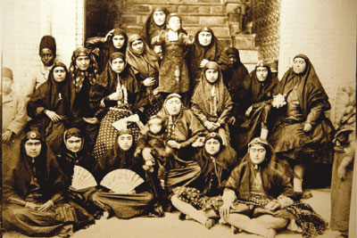

|
|

دختران اشراف در تظاهرات مشروطه شركت نميكردند
منصوره اتحاديه (نظام مافي)
يكشنبه15 مرداد 1391
از زماني كه مطالعات زنان در ايران آغاز شد، حركت زنان در انقلاب مشروطه توجه محققان را جلب كرد، ولي در آن باره شايد غلو شده است، چه ما شناخت وسيعي از اكثريت زنان نداريم. در اين مقاله سعي شده است با استفاده از مكاتبات خانوادگي1 دختر جواني به نام زهرا سلطان و مادرش، خديجهخانم، شمهيي از زندگاني زنان در آستانه انقلاب مشروطه و عكسالعمل آنان را در آن دوره به طور اختصار به عنوان نمونهيي از تفكر لااقل عدهيي از زنان توضيح دهيم.

پدر زهرا سلطان رضاقليخان نظامالسلطنه و مادرش خديجه سلطان خانم دختر ميرزا رضا مستوفي آشتياني بود. رضا قليخان پسر حيدرقليخان برهانالدوله پسر دوم شريفخان از ايل مافي بود. خديجه خانم در 12 سالگي در سال 1301 ق به عقد رضاقليخان درآمد. قابل ذكر است كه رضا قليخان در طول عمر فقط يك همسر اختيار كرد كه اين امر از اتفاقات نادر زمان وي به شمار ميآيد. زهرا سلطان در سال 1312 ق/ 1895م در حالي كه پدر در ماموريت لرستان حضور داشت، متولد شد.
در سال 1319ق/1902م رضا قليخان به حكومت بوشهر و بنادر مامور شد. در همين ماموريت بود كه به فكر ميافتد محمدعلي، پسربزرگش را براي تحصيل به بيروت بفرستد، اما خديجهخانم كه زني مقتدر و خودراي بود، سخت مخالفت ميكند و مينويسد: «از قراري كه مرقوم شده بود، خيال داريد فرزندم محمدعلي را به بيروت روا فرماييد. نميدانم چه باعث فسخ عزيمت شده كه اول بنا بود به لندن يا بلژيك بفرستيد و حالا راي مبارك بر اين قرار گرفته كه بيروت برود. شما را به خدا، به تمام اوليا قسم ميدهم، اگر محض صرفه و نزديكي مسافت است، از اينها صرفنظر كنيد. او كه از ما دور شد، چه لندن، چه بيروت تفاوت ندارد و ملاحظه صرفه هم نفرماييد، چندان فرقي نخواهد كرد. شما اين همه مخارج كردهايد حالا اين ملاحظه را البته نخواهيد فرمود. شما را به خدا قسم ميدهم هرجا كه ميدانيد بهتر است و بهتر تحصيل ميشود، او را بفرستيد.»
سرانجام رضاقليخان محمدعلي را به بوشهر خواست و او را همراه كلنل فرامرزخان از پيشكاران خود از طريق بمبئي و فرانسه روانه بلژيك كرد. اعزام جوانان به اروپا در عهد ناصري ممنوع بود. ناصرالدينشاه معتقد بود چشم و گوش آنها باز خواهد شد. در دوران مظفرالدينشاه اين امر رواج يافت و حتي در برخي موارد بچهها را در طفوليت به اروپا ميفرستادند، چنانكه محمدعلي در اين هنگام حدود 12 سال داشت. دو سال بعد محمدعلي به روسيه رفت و در مدرسه حقوق مشغول تحصيل شد و رضاقليخان از دور مواظب درس او بود و هر نامه كه مينوشت، نصيحت ميكرد. «در تكميل زبان فرانسه خودداري نكن. حالا كه در روسيه هستي به ناچار زبان روسي تكميل ميشود. خيلي مراقبت از فرانسه داشته باش كه در ايران زبان فرانسه محتاجاليه عموم مردم است و هركس تمام علوم را كامل باشد و زبان فرانسه او صحيح نباشد، مثل اين است كه هيچ تحصيل نكرده است و در اين صورت خيلي بايد مراقبت از فرانسه داشته باشي. چرا از جنگ ژاپون و روس نمينويسي؟ از قراري كه جناب مشيرالملك نوشته بود، وزير عدليه كه مدير مدرسه شماست خيلي نسبت به شما محبت دارد. من خيال دارم براي او تحفه بفرستم. نميدانم قاليچه بهتر است، يا اسباب نقره و قلمزني كار شيراز، هر يك را مناسبتر ميداني بنويس، تهيه كرده بفرستم. قاليچه آنجا، پشمي مطلوب است يا ابريشمي، اين فقرات را بنويس.»يك بار نوشت: «خط نستعليق تو قدري خراب شده، كلمات را خيلي دراز ميكشي و در عبارت هم جمله معترضه و اطناب بيموجبي زياد داري. يكي از لوازم فصاحت اين است كه اطناب ممل و ايجاز مخل نداشته باشد يعني نه اينقدر عبارات و جمله زيادي بياورد كه از براي خواننده باعث كسالت باشد و مطلب از ميان برود و نه اين قدر موجز و مختصر باشد كه باز مطلب از او مفهوم شود، گلستان شيخ و روزنامه حبلالمتين را مگر نميخواني؟ از ملاحظه جريده حبلالمتين غفلت مكن.»همچنين نوشت: «امروز وضع ايران تغيير كرده، محتاج به مردم باعلم و اطلاع هستند. اگر تحصيلات تو صحيح بشود و با دانش از فرنگ مراجعت كني، داخله ايران بيشتر محتاج به وجود امثال تو خواهد بود. در اين صورت در تحصيلات خودت بكوش كه وقت مراجعت به وطن عزيز اول شخص عالم باشي، تا سه چهار سال ديگر ايران خيلي اشخاص ميخواهد و زحمت تو هدر نميرود، چون شير به خودت سپهشكن باشد، فرزند خصال خويشتن باش. ملاحظه بكن هر كار بزرگي در ايران اسم برده ميشود، مشيرالملك و احتشامالسلطنه را اسم ميبرند. علت چيست، در فرنگ تحصيل علم كردهاند، عقب هوا و هوس و مشهبات نفس نرفتهاند.»
ولي برعكس تحصيل پسران، سوادآموزي براي دختران چندان جدي نبود، خياطي، شيرينيپزي و گلدوزي از هنرهايي بود كه دختران بايد ميآموختند. اساس تربيت دختران سكوت، كمحرفي و تمكين از بزرگترها بود. از طفوليت به دختران تفهيم ميشد كه هدف زندگي و خوشبختي ازدواج، شوهرداري و بچهداري است و دليلي براي تصوري غير از اين در مورد زهراسلطان وجود ندارد. بعضي از خانوادههاي متمكن براي تعليم فرزندان خود از سنين پايين معلمههاي فرنگي كه اكثرا فرانسوي بودند استخدام ميكردند تا بچهها زبان خارجي بياموزند و به سبك فرنگي تربيت شوند. خديجهخانم هم براي بچههاي كوچك خود به همين فكر افتاد و به پسرش محمدعلي نوشت: «در باب مادام نوشته و از من راي خواسته بوديد. من چه حرفي دارم، در هر مورد اسباب راحتي شماها را ميخواهم. چيزي كه هست، خيلي دقت بكنيد كه يك معلم نجيبي اجير كنيد كه اينجا كه آمدند بعد از چندي هزار تا فاسق و عاشق دلخسته پيدا نكند كه براي من اسباب زحمت بشود، يك مادامي خانه فرمانفرما اجير كردند كه سگ به رويش نگاه نميكند. با وجود اين بدگلي شاهزاده قدغن كرده است كه هر وقت به كوچه ميرود، چادر سر ميكند. حتي به سفارت فرانسه كه دعوتش ميكنند، با چادر و پيچه ميرود تا دم سفارت، آنجا چادر و پيچه را توي كالسكه ميگذارد، آن وقت ميرود توي سفارت.»ولي اين اتفاق نيفتاد و رضاقليخان و خديجهخانم معلمه فرانسوي استخدام نكردند. اما از نظر اين دو، تحصيل دختران اهميت داشت. خديجهخانم كه در 12 سالگي به عقد رضاقليخان درآمده بود، سواد كمي داشت. نامههاي او غالبا مملو از اغلاط املايي بود، اما او با شعر آشنايي داشت و در نامهنگاري تعلل نميكرد. وي درصدد آن بود كه براي دخترانش معلمان مناسب بيابد و پدر نيز به دروس آنها توجه داشت و تا حدي پشتيبان فكري زن بود.دو نامه از پيشكار رضاقليخان خطاب به رضاقليخان نظامالسلطنه وجود دارد كه درباره دروس معصومهخانم - خواهر كوچك زهراسلطان - است و نشان ميدهد كه تحصيل براي يك دختر مستلزم چه نكاتي بود. «ولي در باب درس فرانسه نخواندن خانم كوچك، به اندرون عرض كردم. فرمودند تاكنون معادل 500 تومان متجاوز خرج شده است، تا دو كلمه درس خواندهاند، انصاف نيست كه حال به كلي صرفنظر بشود. گلدوزي و خورشپزي را در سن 30 سالگي ميشود آموخت، ولي موقع درس خواندن امروز است و چهار سال ديگر غيرممكن و اگر دانستن زبان فرانسه اسباب تمجيد نباشد، تكذيب نميشود و شهدالله راست و صحيح هم بفرمايند، فقط چيزي كه اسباب زحمت شاه است، حكايت معلم است. اين مسيو ريشار يك حسن دارد و صدهزار كرور عيب. آن يك حسن اين است كه در حقيقت حالت زن به هم رسانيده، تصور نميشود كه اگر دو ساعت در اتاق خلوت باشد، نگاه بدي بكند، ولي از آن طرف بدگو، بدرو، بدخلق، از اينها همه بالاتر زبان فارسي نميداند كه... فرانسه را به فارسي ترجمه نمايد.»در نامه ديگري نوشت: «در باب درس نخواندن و ياد گرفتن علومات گلدوزي و خوراكسازي خانم كوچك دستخط شده بود. چند چاپار قبل جواب عرض نمود. اكنون هم به عرض ميرساند [كه] مسيو ريشار به واسطه ندانستن زبان فارسي وقت خانم كوچك را ضايع كرد زيرا اگر در اين مدت اوقات را فقط صرف خواندن و نوشتن فارسي كرده بودند، امروز تا يك اندازه رفع حاجت از فارسي شده بود. ولي امروز قسمي شده است كه هر دو درس ناقص است. اگر متاركه شود، به كلي زحمت و خرج اين مدت تمام به هدر خواهد رفت و آنچه تحصيل كردهاند، در اندك مدتي فراموش خواهد شد و حيف است كه حالا صرفنظر بشود. عاقبت از بابت درس خانم كوچك كه خواندن و نوشتن فارسي بلد باشند قرار شد كه اين دو سهماهه زمستان هم به همان ترتيب سابق مشغول باشند، بعد از عيد را روزي نيمساعت ميرزا عبدالغفار دريابيگي از اتاقهاي باغ درس و مشقي بدهد كافي است.»در سال 1321 محمدعلي به علت آشوبهاي روسيه موقتا به ايران بازگشت. در مدتي كه در ايران بود تحصيل و تربيت خواهر خود زهراسلطان را وظيفه خود دانست و به راهنمايي او پرداخت. پس از مراجعت به روسيه از وي خواست مرتب برايش نامه بنويسد و از اخبار خانواده و وقايع كشور او را آگاه سازد. بنابراين زهراسلطان مرتبا به او نامه مينوشت و از وضع دروس خود وي را مطلع ميكرد: «از درس بنده پرسيده بوديد، تا به حال كه خيلي خوب بود، اما از اين به بعد نميدانم چطور خواهد شد، چون مادام مورل رفتني فرنگ شد، براي اينكه هم بچههايش را ببيند و هم دكتر مورل- شوهرش [را] كه خيلي ناخوش است- معالجه كند. مدت سفرش هم معلوم نيست كه سه چهار سال خواهد شد، يا شش ماه. هرچه تا به حال جستوجو كرديم، معلمي كه هم فرانسه بداند و هم پيانو پيدا نكرديم؛ كسي كه پيانو هم بداند نيست.اما معلم فرانسه خيلي هست، ديروز خود مادام مورل آمده بود اينجا خداحافظي، يك مادمازل 32ساله هم براي درس فرانسه همراه خودش آورده بود كه در پاريس تحصيل كرده و اينجا هم مدرسه مودبالملك و چند جاي ديگر هم او درس ميدهد. با هم قرار گذاشتيم كه هفته[يي] چهار روز بيايد روزي هم يك ساعت و نيم بنشيند به ماهي 10 تومان. اما در باب پيانو تا وقتي كه مادام مورل بود، روزي دو ساعت و نيم الي سه ساعت مشق ميكردم، حالا هم چيزهايي كه تا به حال ياد گرفتهام روزي يك ساعت و نيم مشق ميكنم كه فراموش نكنم.»زهراسلطان اخبار شهر را نيز مينوشت: «شبها از دست دزد آسودگي نداريم. دو شب است كه دزد ميآيد خانه وثوقالدوله، آنها بيدار ميشوند؛ از آنجا ميآيد اينجا، قراولهاي ما بيدار بودند و تفنگ انداخته، فرار كرده بودند.»«دو شب قبل، قفل در باغ بيروني را شكسته بودند و يك تيغه را هم خراب كرده بودند. ميرزاعلي خان رفت يكي از صاحبمنصبهاي نظميه را آورد، قفل و تيغه را به او نشان داد. قرار گذاشتند كه به آن خيابان پليس بگذارند. خانه حشمتالدوله هم رفتهاند. لباس و اسباب بردهاند. وزير جنگ هم اعلان كرده بود كه تا 10 روز ديگر تمام قراولهاي مردم را ميگيرند. زياده عرضي ندارد.»وضعيت معيشت مردم رو به وخامت ميگذاشت، به خصوص وضع نان روز به روز بدتر ميشد. زهراسلطان در اين زمينه به محمدعلي مينويسد: «اگر از اخبارات اينجا خواسته باشيد حالا كه غير از بيناني هيچ خبري نيست يعني هيچ نان پيدا نميشود و تا به حال چند نفر سر نان، توي دكانهاي نانوايي كشته شده و يك محشري است براي نان. ما كه از صبح دو نفر ميفرستيم عقب نان، تا ظهر به زور و مرافعه چند دانه نان ميآورند، آن هم خوردني نيست.»
پس از استبداد صغير و سقوط محمدعليشاه، نامههاي زهراسلطان كه اكنون 14ساله بود به محمدعلي مفصلتر شد.
«از اخبارات اينجا خواسته باشيد، به جز انقلاب خبري نيست. مردم كه آسودگي ندارند. قاتل آقا سيدعبدالله هنوز پيدا نشده است، بعضيها ميگويند كشتن آقا سيدعبدالله به تحريك تقيزاده بوده است. ديروز شهرت داشت كه باز ميخواهند بازارها را ببندند، اما هنوز نبستهاند. وزرا هم معين شدهاند، از قرار ذيل: مستوفيالممالك رئيسالوزرا اما بيوزارتخانه، فرمانفرما وزير داخله، قوامالسلطنه وزير جنگ، حسينقليخان نواب وزير امور خارجه، حكيمالملك وزير ماليه، اسدالله ميرزا وزير پست و تلگراف و دبيرالملك وزير عدليه، سپهدار، سردار اسعد، مشيرالدوله و صنيعالدوله هم وكيل مجلس شدهاند. زياده عرضي ندارد. 20 رجبالمرجب.»
در نامه ديگري در 12 ربيعالثاني 1328 به مسائل سياسي ميپردازد، ولي بيشك اين صحنهها را خود نديده و فقط شنيده بود. «خبر تازه قابل عرض مطلبي نيست، جز خبر معزولي سپهدار و سردار اسعد كه استعفا دادهاند، قبول هم شد. از قراري كه ايران نو مينويسد گويا ميخواهند مستوفيالممالك را رئيسالوزرا كنند. وزارت جنگ هم هنوز معلوم نيست قسمت كي خواهد شد. چند روز پيش هم ستارخان وارد شد. نميدانيد با چه دستگاه و جلالي از تهران تا شاهآباد تمام را دروازه بستند. مردم همه پيشواز رفته بودند، از هر صنف. مردم عليحده چادر زده و شيريني و شربت به مردم ميدادند. تمام تجار از قبيل تاجرهاي تبريزي، تاجرهاي تهراني، تاجرهاي زرتشتي، همه عليحده چادر زده بودند. تمام كاسبها حتي نانواها همه رفته بودند. ارمنيها با موزيك رفتند. چند دسته موزيك سرباز با سوارهاي بختياري و مجاهد، كالسكه دولتي را برايش برده بودند. توي باغشاه هم از جانب شاه و نايبالسلطنه، وزير تشريفات از آنها پذيرايي كرده است. سرخندق پر بود از زنها.»
حضور عدهاي مجاهد و بختياري مسلح در شهر موجب ناامني بود و شكايت در روزنامهها زياد بود. قتل سيدعبدالله بهبهاني و دو نفر به انتقام او موجب شد بالاخره مجاهدان را خلع سلاح كند. ولي اين واقعه نيز بدون خونريزي انجام نگرفت. زهراسلطان براي برادر خود چنين نوشت:«از اخبار اينجا خواسته باشيد، اينقدرها خبرهاي تازه جور به جور زياد است كه آدم وقت شنيدن ندارد. چند روز بعد از كشته شدن آقا سيدعبدالله يك روز سه نفر را توي شهر كشتند كه يكياش ميرزاعلي محمدخان نام بود كه از قرار يكي از روزنامهها، از روساي مشروطهطلب بود. در مجلس خيلي گفتوگو در باب جلوگيري از اين بينظمي كردند و مجري كردن قانون ترك سلاح را از وزرا خواستند. وزرا هم يك اعلاني كردند كه هر كس اسلحه دارد تا دو روز بعد از آن اعلان، كه شنبه آخر ماه رجب ميشد، مهلت دارد كه اسلحهاش را به دولت بفروشد و پول نقد دريافت كند. هر كس هم نداد، به قوه جبريه از او گرفته خواهد شد و خودش هم مجازات خواهد شد. خيلي از مردم و مجاهدين دادند. اما اغلب از مجاهدين و جمعي از اهل شهر و كسبه در پارك اتابك دور ستارخان و باقرخان جمع شدند و اسلحه نميدادند. از طرف دولت هر چه به آنها در باب دادن اسلحه اخطار شد قبول نكردند و در پارك اتابك تهيه جنگ را حاضر كردند. از طرف دولت هم سوار بختياري، اجزاي نظميه، سرباز و سوار امنيه حكم شد كه دور پارك را تماما سنگربندي كردند. چندين توپ هم از توپخانه بردند. روز يكشنبه غره شعبان، از چهار به غروب مانده شروع به جنگ كردند، يعني اول مجاهدين سه نفر از بختياريها را كشتند كه قشون دولتي هم شروع به جنگ كردند. ديگر نميدانيد كه چه صداهاي جور به جور ميشنيديم. هر دقيقه هزار جور صدا از توپ، تفنگ، بمب و نارنجك. هر چند بيش از 9 ساعت نبود اما سخت بود، اين آخرها كه صداي اهل پارك كه يا علي ميكشيدند و امان ميخواستند هم قاطي صداي توپ و تفنگ شده بود. باري آخر در پارك را نفت زده، داخل شدند. ستارخان و باقرخان و سردار محي رشتي را با 550 نفر ديگر را زنده گرفتند اما ستارخان گلوله به قلم پايش خورده و زخمش كاري است، تمامشان را حبس كردند. صبح آن روز هم اول در پارك را بسته و هيچ كس را راه نميدادند. تا كشتهها را جمع كردند از قراري كه ميگفتند، از اهل پارك خيلي كشته شده بودند. جسد را با گاري و درشكه ميآوردند سر قبرستان. باري، قانون ترك سلاح مجري شد اما شلوغي تهران تمام نشد. مردم تمام بازار را دو روز است بستهاند. درست معلوم نيست كه چرا بستهاند. اما از قراري كه ميگويند حرفشان اين است كه چرا با ستارخان جنگ كرده و به روي او توپ بستهايد. زياده عرضي ندارد.» از جمله وظايف زهراسلطان جوان رسيدگي به مساله ارسال مخارج برادران بود به اروپا و نامههاي متعدد در اين باره نوشته است از جمله: «از بابت خرجي مرقوم فرموده بوديد كه زودتر بفرستيم، با پست قبل 380 منات فرستاديم، برات دومش هم در جوف پاكت است، باقياش را هم حضرت عليه خانم به مغيثالسلطنه (پيشكار) گفتهاند كه بگيرد.»
زهراسلطان كه بحثهاي مربوط به مشروطه، آزادي، مجلس شوراي ملي و انتخابات را ميشنيد و گهگاه خبري از فعاليت زنان به گوش او ميرسيد به مرور تحتتاثير هيجان و شور اين رويدادها قرار ميگرفت. او در نامهيي بيتاريخ نوشته: «از قراري كه شنيدهام تبريز خيلي رو به ترقي است. مثلا چند وقت پيش يكي از خانمهاي معتبر تبريز، مهماني بزرگ كرده بود و تمام خانمهاي محترم تبريز را وعده گرفته بود. نطقي كرده بود از اين قرار كه خانمهاي محترم ما تا به حال هر چه به زور از شوهرهايمان، پول ميگرفتيم و خرج لباس مخمل و اطلس ميكرديم حالا بس است و به همين چيت فرنگي اكتفا كنيم و با پول اطلس و مخمل يك مدرسه براي دخترها درست كنيم.»
وي همچنين مينويسد: «خانمهاي ايران يك شركت خيريه درست كردهاند و ديروز كه جمعه بود، در پارك اتابك يك مجلس كنفرانس و سينماتوگراف دادند و با پولي كه جمع ميشود، ميخواهند يتيمخانه و مريضخانه و مدرسه براي دخترها درست كنند. بليت هم چاپ كرده بودند، از پنج هزاري تا دو توماني. همان طور كه وقتي شما اينجا بوديد، در منزل ظهيرالدوله براي مردها درست كرده بودند.»
زناني كه در دوره مشروطه به فعاليت اجتماعي و فرهنگي پرداختند متعلق به طبقه متوسط جامعه بودند. پدران و شوهران آنها تحصيلكرده، روشنفكر و مشروطهخواه بودند به همين سبب همسران و دخترانشان را نيز به تحصيل تشويق ميكردند ولي زنان و دختران رجال و طبقات اشراف اگر هم به مشروطه علاقهمند بودند در تظاهرات و فعاليت زنان شركت نميكردند. ولي همان طور كه از نامههاي زهراسلطان برميآيد، لااقل عدهيي از زنان به اين فعاليتها توجه داشتند و احتمالا با اشتياق اخبار مربوط به زنان را در روزنامهها ميخواندند و آن را تحسين ميكردند. البته اين را نيز بايد افزود كه در ميان زنان عدهيي مخالف اين جريانات بودند، چنانكه قهرمان ميرزا عينالسلطنه برادر ناصرالدين شاه در خاطراتش مينويسد: «زنها شاه را قلبا دوست دارند و همه او را دعا ميكنند.» او در جاي ديگر نوشت: «سابقا نوشتم زنها مستبدند و استبداد صحيح در آنهاست. من نديدم زني كه مضمون براي مجلس و علما نگويد، چون علم ندارند [و] از همه جا بيخبرند، حالي هم نميشوند.»
مهمترين دستاورد زنان در انقلاب مشروطه حق سوادآموزي بود كه توسط خود زنان مطرح شد. در تب و تاب مشروطه با اتكا به متمم قانون اساسي كه بيتوجه به جنسيت حق تحصيل، آزادي قلم و تشكيل انجمن را آزاد اعلان كرد زنان اين فرصت را يافتند كه تقاضاي حق تحصيل كنند و به تاسيس مدرسه براي دختران همت گمارند. پس از آن بود كه بالاخره دولت نيز به مساله تحصيل دختران توجه كرد. البته سالها به طول انجاميد تا مساله آموزش دختران در جامعه كاملا پذيرفته شد. گفتني است دختران زهراسلطان مانند مادر آموزش را در منزل آغاز كردند ولي براي تكميل آن به مدرسه رفتند و يكي از دختران وي قبل از جنگ جهاني دوم در اروپا تحصيل كرد.
پينوشت :
1- اين مكاتبات جزو مجموعه اسناد خانوادگي حسينقليخان نظامالسلطنه و رضا قليخان نظامالسلطنه، از رجال سياسي دوره قاجار است. قسمتي از اين مكاتبات در كتابي تحت عنوان در زير و بم روزگار زندگينامه عزتالسلطنه نظاممافي به زودي توسط نشر تاريخ ايران منتشر خواهد شد.